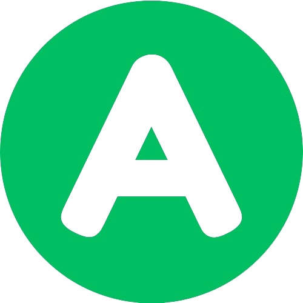
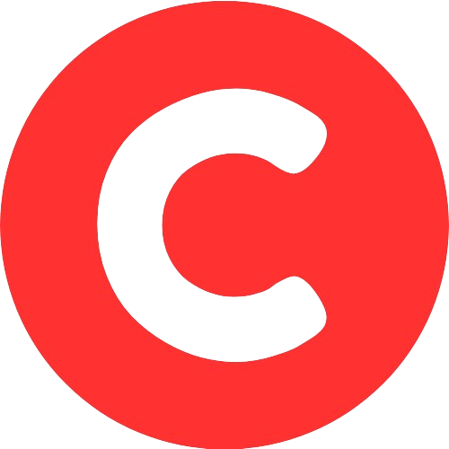

Objetivo
TeCAI tiene como objetivo analizar y extraer datos de una página web para brindar al usuario asistencia en la verificación de la confiabilidad de una fuente, utilizando diversos parámetros predeterminados
FuncionamientoSe basa esencialmente en el planteamiento de preguntas específicas para conocer la veracidad y confiabilidad de la página consultada. |
Aunque la inteligencia artificial (IA), con su capacidad de procesamiento avanzado, ayuda a filtrar información de calidad, siempre es recomendable revisar manualmente las fuentes de información que consultamos para obtener resultados seguros. Las IA no son perfectas y pueden tener fallos. La revisión manual nos permite verificar la veracidad y confiabilidad de la información antes de tomar decisiones basadas en ella. Es importante recordar que las IA pueden estar sesgadas o interpretar erróneamente ciertos datos, por lo que la supervisión humana es crucial para garantizar la precisión y la integridad de la información que consumimos. |
CATEGORÍAS

No hay error visible en la categoría evaluada
Se encuentran algunos errores en la categoría evaluada, que afectan mínimamente la calidad de la información
